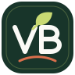
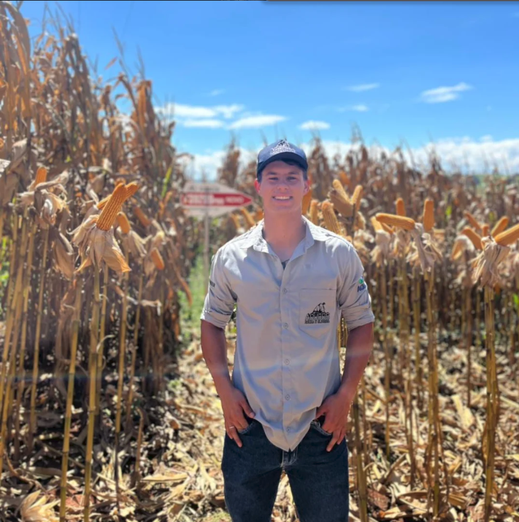
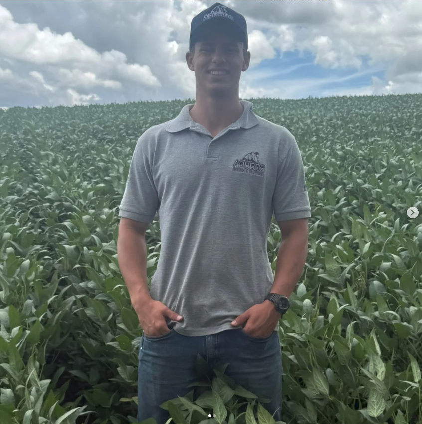
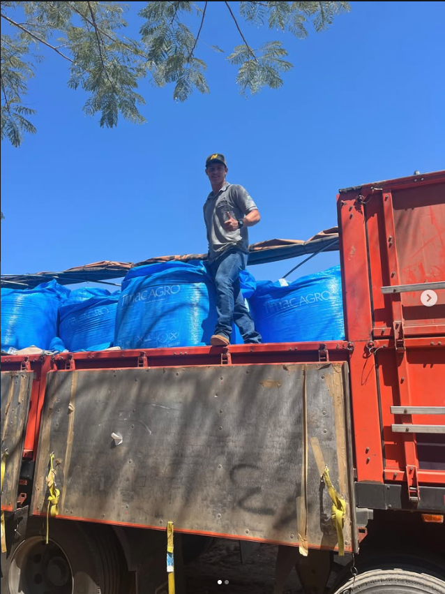

Assistência técnica
Acompanhamento próximo da operação, identificação de necessidades e apoio para decisões mais seguras.
↗
Vinicius BiasettoTécnico agrícolaTécnico agrícola & futuro engenheiro
Conhecimento técnico para transformar rotina, recurso e tecnologia em decisões mais inteligentes no campo.

Meu trabalho começa no campo, mas não termina nele. Observo, analiso e busco soluções que façam sentido na prática.
Sou Vinicius Biasetto, técnico agrícola e estudante de Engenharia Agrícola. Minha atuação combina vivência no campo, acompanhamento de culturas e interesse por soluções que tornam a produção mais eficiente, responsável e preparada para o futuro.
Ver como posso contribuir ↗Acompanhamento próximo da operação, identificação de necessidades e apoio para decisões mais seguras.
↗Visão prática sobre preparo, cultivo e acompanhamento do desenvolvimento da produção.
↗Organização de informações para enxergar padrões, planejar melhor e otimizar recursos.
↗Busca por práticas responsáveis que respeitem o solo, a água e o futuro da produção.
↗Frentes que orientam minha formação e meu desenvolvimento profissional no campo.
Dados para decisões mais precisas

Eficiência que começa no planejamento
Cuidar hoje para colher amanhã

Vamos conversar sobre sua produção, seus objetivos e as possibilidades de fazer diferente.